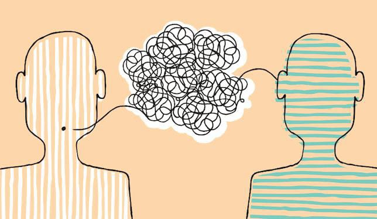

La comunicación es el proceso por el cual se transmite y recibe información entre dos o más personas. La comunicación puede ser verbal o no verbal, es decir, puede usar palabras o gestos, imágenes, sonidos u otros signos. La comunicación es una habilidad esencial para el ser humano, ya que le permite expresar sus ideas, emociones y conocimientos, así como interactuar con otros individuos y grupos.
La comunicación ha evolucionado a lo largo de la historia, adaptándose a las necesidades y avances de la humanidad. Desde los primeros signos y sonidos que usaban los homínidos, pasando por la escritura, el alfabeto, la imprenta, el telégrafo, el teléfono, la radio, la televisión, el internet y las redes sociales, la comunicación ha experimentado cambios significativos que han influido en la cultura, la política, la economía y la sociedad.
A continuación un vídeo con La evolución de la comunicación a través de la historia